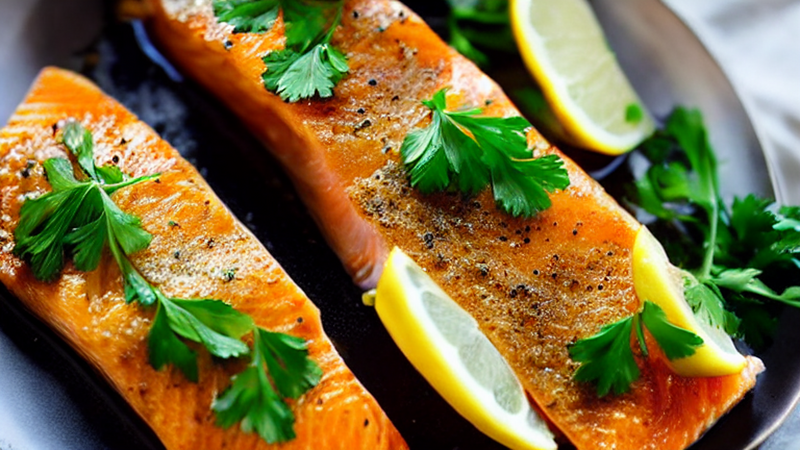
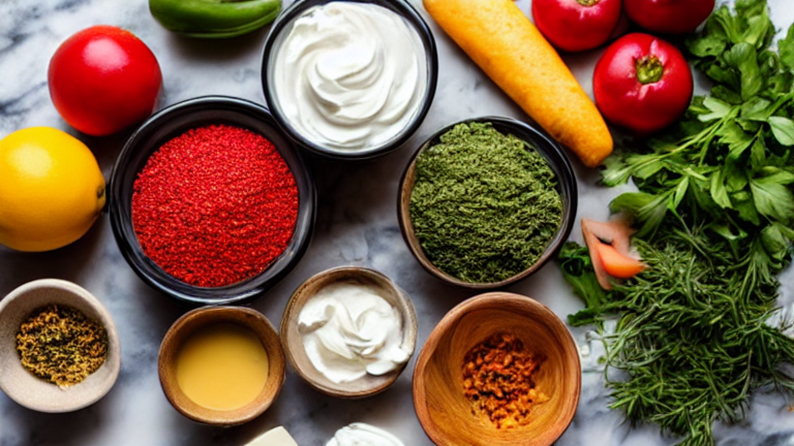
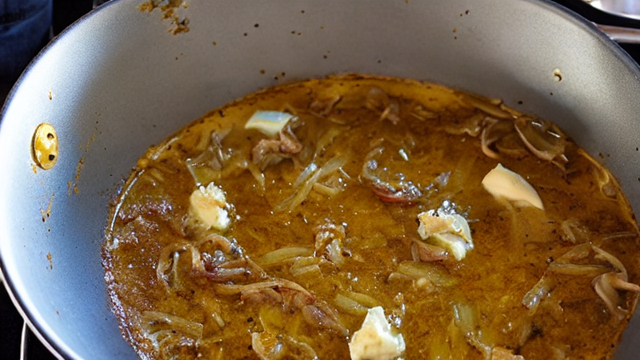
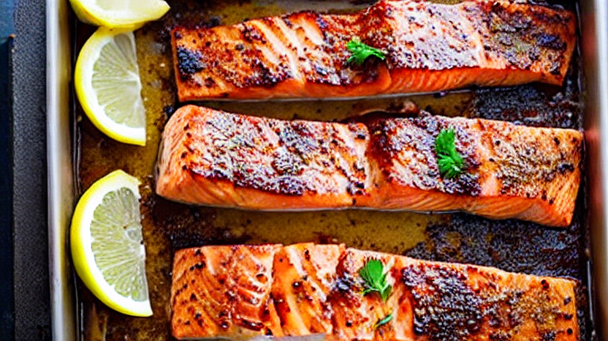
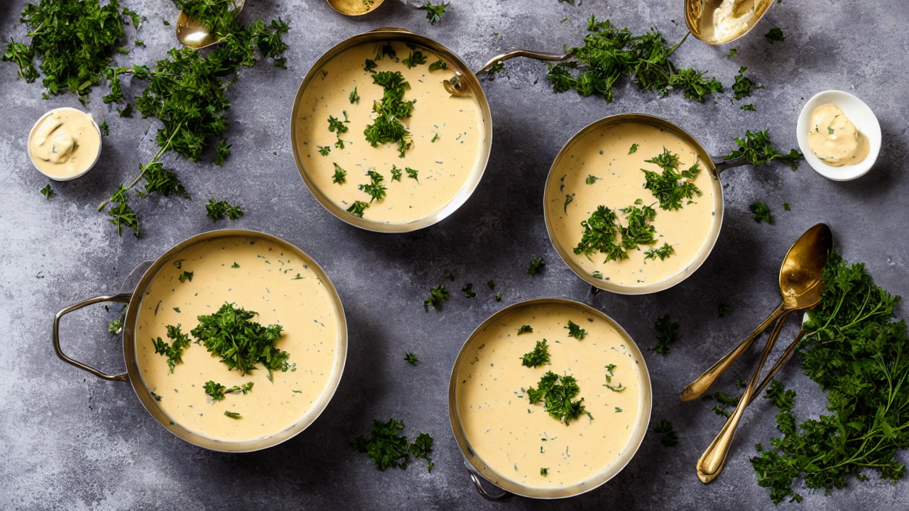
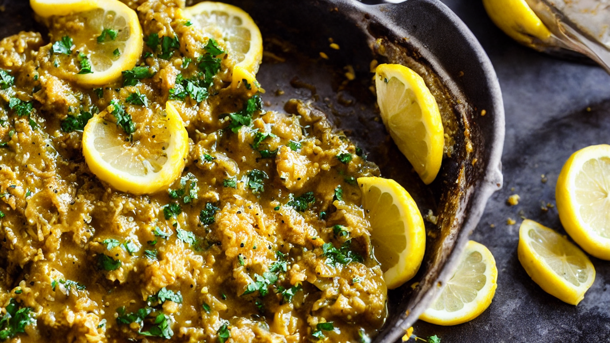
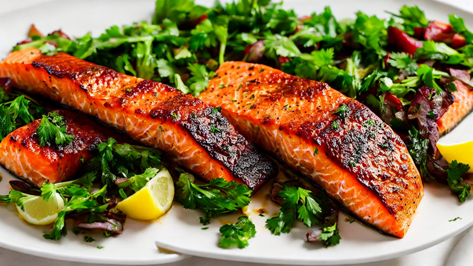
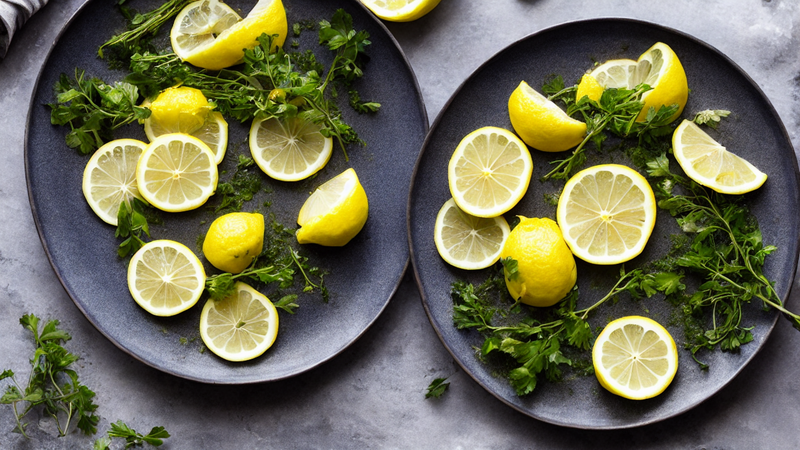

15-Minute Creamy Tuscan Salmon | Quick & Flavorful Recipe
This Creamy Tuscan Salmon recipe is a weeknight winner! Fresh salmon, cherry tomatoes, and a rich garlic-herb sauce come together in 15 minutes. Perfect for a quick, elegant dinner. Subscribe for more easy recipes!
Ingredients
- your ingredients: salmon fillets
- cherry tomatoes
- Kalamata olives
- garlic
- white wine
- cream
- fresh herbs
Instructions

This Creamy Tuscan Salmon is so good, you'll never order takeout again! Let's make it together in just 15 minutes.

Grab your ingredients: salmon fillets, cherry tomatoes, Kalamata olives, garlic, white wine, cream, and fresh herbs.

Season salmon with salt, pepper, and garlic. Heat olive oil in a skillet, then sear salmon until golden and just cooked through.

Add cherry tomatoes and olives to the pan. Toss with white wine, then stir in heavy cream and fresh herbs for a rich sauce.

Let the sauce simmer until thickened, then spoon it over the salmon. Add a final touch with lemon zest and parsley.

Plate with extra herbs and a squeeze of lemon. This dish is so delicious, it'll become your new favorite weeknight meal!

Need more Tuscan inspiration? Check out our other recipes for quick, flavorful meals that impress!

Thanks for watching! Don't forget to subscribe for more easy, restaurant-quality recipes that take less than 30 minutes.